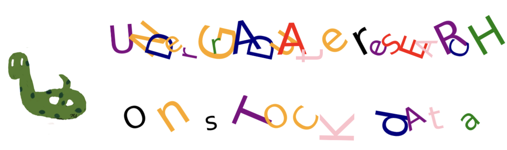

Preface#

I have been mentoring undergraduate research projects in data science since 2018, with a focus on stock data. Working with stock data offers several advantages, including easy access to datasets through the Yahoo Finance API and a straightforward understanding of basic terminology, as it aligns closely with real-world knowledge.
The purpose of this book is to provide research projects for undergraduate students. It includes various projects, each with multiple research questions. These projects are inspired by the “future work” sections of published research articles.
Each project is based on a published paper, starting with replicating the original work as closely as possible. Then, each research question focuses on improving a specific aspect of the original study.
Sticking to a published article offers several benefits:
It provides students with clear examples of the structure, steps, and components of a research project.
Revisiting the article multiple times throughout the project helps students gain a deeper understanding of the subject.
Future work recommendations in the article suggest potential research questions for further exploration.
The reference section offers a well-organized list of relevant sources, with explanations often found in the Introduction and Literature Review sections.
For any unclear aspects, students can reach out to the authors for clarification.
The code examples in this book are written in Python but can be adapted to other programming languages. The projects are suitable for programming courses in Computer Science, Engineering, or Business departments.
Yusuf Danisman, the author, is a faculty member in the Mathematics and Computer Science Department at Queensborough Community College, CUNY. He obtained his PhD in Mathematics from The Ohio State University and worked at the University of Oklahoma before joining CUNY. He teaches Mathematics, Statistics, Computer Science, and Data Science courses. Dr. Danisman is currently researching Financial Machine Learning and Geometric Deep Learning. He is also a steering committee member of the Northeast Big Data Innovation Hub.